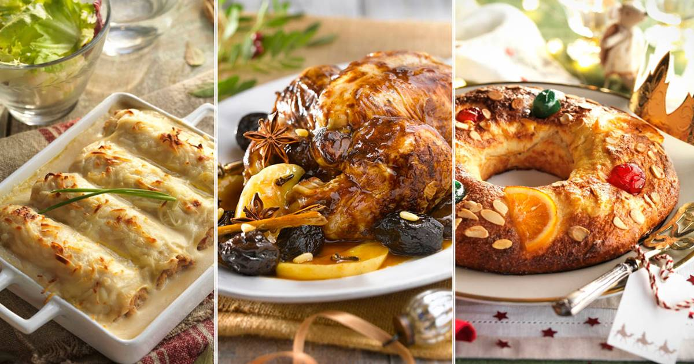

Recetas de Pescados - kiwilimon.com Encuentra y disfruta nuestras recetas de pescado con las que podrás deleitar tu paladar. Pescado a la florentina, pescado empapelado, bacalao navideño, paella de mariscos, son algunos ejemplos de lo que puedes encontrar.
Recetas ricas, rápidas, fáciles y originales | Knorr Descubrí nuestras recetas, son ricas, prácticas y fáciles de hacer. Con Knorr tus recetas quedan increíbles. Knorr, el auténtico sabor de lo hecho en casa.
Google Drive: Sign-in We would like to show you a description here but the site won’t allow us.
Innatia - Vida sana y tradiciones 2.4m Followers, 1,210 Following, 4,148 Posts - See Instagram photos and videos from Paulina Cocina - Recetas y eso (@paulinacocina)
Recetas para ocasiones especiales , caseras y fáciles- De ... Recetas de pollo. El pollo es un ingrediente sano y versátil con el que se pueden cocinar cientos de platos diferentes: guisado, al horno, en salsa, en croquetas, etc. Cuando hablamos de recetas de pollo nos vienen a la cabeza miles de preparaciones con diferentes ingredientes, salsas y guarniciones. Esto es lo bueno del pollo, que se puede preparar de mil maneras, siempre queda riquísimo ...
Recetas de pollo 216.4k Followers, 177 Following, 5,363 Posts - See Instagram photos and videos from Las Recetas de MJ (@lasrecetasdemj)
Gurmé: Recetas de cocina, bares y restaurantes de Sevilla Como hacer MERMELADA de TOMATE en THERMOMIX y otras recetas. Cómo hacer BIZCOCHO CEBRA paso a paso. POLLO a la CERVEZA al horno, a la olla, a la parrilla, plancha y disco. KEBAB en casa o A DOMICILIO. Manualidades Ver más. Cómo RECICLAR ROPA vieja y convertirla en nueva.
Las Recetas de MJ (@lasrecetasdemj) is on Instagram Recetas de Cocina Mexicana, platillos tipicos mexicanos, Pozole, Mole, Antojitos, Chiles y todo el sabor de México en las recetas de cocina de la Abuela
Paulina Cocina - Recetas y eso (@paulinacocina ... Recetas para ocasiones especiales 110 recetas Las mejores recetas para ocasiones especiales: Navidad, San Valetín… o ese día que invitas a comer a tu suegra y tienes que lucirte en la cocina. Con los mejores ingredientes, fotografías y explicaciones paso a paso para hacer sencillo lo que parece complicado.
Recetas de pollo
2021.04.19 19:22

Recetas de rechupete Recetas de cocina caseras y fáciles
Recetas de Postres y dulces Pescado y marisco Pollo y otras carnes Arroz Pasta Ensaladas y verduras Tapas y aperitivos Sopas, guisos y legumbres Pan, masas y rebozados Patatas, salsas y guarniciones Para ocasiones especiales Bebidas, cócteles y licores Aprende a cocinar Recetas de pollo Actualidad gastronómica Recetas fáciles y baratas
Inicio » Recetas de pollo
Recetas de pollo
El pollo es un ingrediente sano y versátil con el que se pueden cocinar cientos de platos diferentes: guisado, al horno, en salsa, en croquetas, etc. Cuando hablamos de recetas de pollo nos vienen a la cabeza miles de preparaciones con diferentes ingredientes, salsas y guarniciones. Esto es lo bueno del pollo, que se puede preparar de mil maneras, siempre queda riquísimo, le gusta a todo el mundo y además es un alimento sano y económico. En Recetas de Rechupete esperamos que disfrutes preparando todas estas recetas de pollo, escoge las más fáciles o atrévete con las más elaboradas, con las explicaciones y fotos paso a paso ¡todas salen igual de bien!
Compartir Twittear Pin it Todas
Ver recetas:
Baratas Rápidas
Dificultad:
Fácil Media Difícil
Escalopines de pollo con arroz oriental
Fácil · 60 min 1.2 € por persona
Harira. Sopa de legumbres, carne y tomate. Receta marroquí tradicional
Fácil · 60 min 1.18 € por persona
Cómo hacer pollo en pepitoria casero
Fácil · 70 min 2.2 € por persona
Cómo hacer paella valenciana. Receta tradicional paso a paso
Fácil · 90 min 2.1 € por persona
Samosas rellenas de pollo. Receta hindú con carne
Fácil · 60 min 0.6 € por persona
Pollo al ajillo
Fácil · 30 min 1.7 € por persona
Doner Kebab de pollo
Fácil · 45 min 2.8 € por persona
Noodles o fideos de arroz con pollo y verduras
Fácil · 30 min 2.8 € por persona
Pollo guisado al vino blanco con arroz blanco. Receta fácil, sabrosa y barata
Fácil · 35 min 1.5 € por persona
Cómo hacer arroz chaufa. Receta peruana fácil y sabrosa
Fácil · 60 min 0.8 € por persona
Chaulafan o arroz frito de pollo
Fácil · 60 min 1.5 € por persona
Cómo hacer pollo teriyaki con arroz blanco
Fácil · 25 min 2.55 € por persona
Arroz con pollo al estilo cubano
Media · 40 min 2.2 € por persona
Muslos de pollo al horno al limón
Fácil · 60 min 1,1 € por persona
Guiso de pollo con champiñones
Fácil · 60 min 2.5 € por persona
Cómo hacer ramen. Sopa japonesa casera
Media · 300 min 1.5 € por persona
Sopa de picadillo. Sopa de pollo tradicional
Fácil · 35 min 2.5 € por persona
Croquetas de cocido caseras
Fácil · 45 min 0.5 € por persona
Como conseguir carne asada perfecta. Consejos para un asado de rechupete
Fácil · min € por persona
Tallarines rojos con pollo. Receta peruana fácil
Fácil · 30 min 2.2 € por persona
Cómo hacer sopa de pollo casera
Fácil · 50 min 0.7 € por persona
Guiso de pollo con sepia y langostinos
Media · 70 min 5.3 € por persona
Pollo relleno de butifarra y manzana
Media · 150 min 5,2 € por persona
Pollo con salsa de soja
Fácil · 20 min 2 € por persona
Pollo al chilindrón
Fácil · 60 min 2 € por persona
Arepas rellenas de aguacate, pollo y mayonesa
Fácil · 40 min 2.2 € por persona
Escudella o cocido catalán
Media · 240 min 2.2 € por persona
Pollo asado o al horno fácil
Fácil · 90 min 1.45 € por persona
Quesadillas mexicanas. Varias recetas para triunfar
Fácil · 30 min 0.7 € por persona
Arroz con pollo y setas en cazuela. Receta para disfrutar del Otoño
Media · 60 min 1.9 € por persona
Caldo de carne o fondo claro
Fácil · 120 min 0.5 € por persona
Pitu caleya. Receta asturiana
Media · 240 min 4 € por persona
Cómo hacer un sancocho venezolano
Fácil · 75 min 4.2 € por persona
Paella de pollo. Receta de arroz fácil y barata
Media · 60 min 1.8 € por persona
Curry de pollo con arroz basmati
Fácil · 30 min 2.4 € por persona
Albóndigas con salsa al curry
Fácil · 45 min 3 € por persona
Fideuá de pollo y conejo
Fácil · 40 min 2.7 € por persona
Cuscús con pollo y verduras
Fácil · 30 min 1.5 € por persona
Pollo tikka masala con arroz basmati
Fácil · 60 min 0.7 € por persona
Croquetas caseras de pollo asado
Media · 70 min 0.5 € por persona
Croquetas casi líquidas de queso y pollo
Media · 45 min 0.5 € por persona
Canelones rellenos de pollo
Media · 120 min 2.6 € por persona
Nuggets de pollo con espinacas
Fácil · 40 min 2 € por persona
Nuggets de pollo caseros
Fácil · 25 min 1.6 € por persona
Albóndigas de pollo
Fácil · 100 min 1.5 € por persona
Alitas de pollo al horno
Superfácil · 40 min 1.6 € por persona
Croquetas al horno
Fácil · 45 min 0.5 € por persona
Pollo en pepitoria con setas
Fácil · 120 min 4 € por persona
Caldo de pollo casero
Fácil · 120 min 0.4 € por persona
Croquetas de pollo
Media · 45 min 0.3 € por persona
Arroz caldoso con pollo en cazuela
Fácil · 30 min 0.8 € por persona
Pollo a la naranja
Fácil · 165 min 1.6 € por persona
Aperitivos navideños para niños
Fácil · 60 min 0.9 € por persona
Pollo relleno. Arrollado de pollo especial Navidad
Difícil · 165 min 3 € por persona
Pollo relleno para Navidad
Fácil · 45 min 1.2 € por persona
Pularda rellena. Receta Navidad
Difícil · 200 min 6 € por persona
Empanadas venezolanas de pollo y queso
Media · 60 min 1.5 € por persona
Arepas venezolanas Reina Pepiada
Fácil · 35 min 1.4 € por persona
Arroz con costra al horno
Media · 60 min 1.8 € por persona
Fingers o tiras crujientes de pollo
Fácil · 90 min 0.5 € por persona
Paella mixta o arroz en paella de pollo y marisco
Fácil · 80 min 5.8 € por persona
San Jacobos de pollo
Fácil · 35 min 0.5 € por persona
Arroz con pollo y conejo en paella
Fácil · 50 min 2.3 € por persona
Ensalada de quinoa con pollo
Fácil · 25 min 3.8 € por persona
Ensalada de pollo con queso de Arzúa y nueces
Fácil · 10 min 1.9 € por persona
Ensalada de pollo y piña
Fácil · 18 min 0 € por persona
Ensalada Waldorf
Fácil · 25 min 3.8 € por persona
Pollo asado con mostaza y miel acompañado de arroz blanco
Fácil · 60 min 1.5 € por persona
Cómo hacer arroz chino frito
Fácil · 60 min 1 € por persona
Chop suey de pollo con arroz blanco. Receta china
Fácil · 60 min 1.5 € por persona
Pollo a la jardinera
Fácil · 60 min 2 € por persona
Caldo de pollo concentrado
Fácil · 120 min 0.4 € por persona
Pollo al curry express. Curry rápido
Fácil · 15 min 1.5 € por persona
Cómo hacer pollo con arroz
Fácil · 45 min 1.5 € por persona
Alitas de pollo al horno con salsa barbacoa
Superfácil · 40 min 1.5 € por persona
Pollo campero o de corral guisado
Media · 240 min 4.5 € por persona
Pollo al curry con arroz thai
Fácil · 40 min 2.8 € por persona
Cuscús con pollo al curry
Fácil · 35 min 2.7 € por persona
Gazpachos manchegos o galianos
Media · 60 min 2.4 € por persona
Empanadillas de pollo y setas
Media · 90 min 0.5 € por persona
Empanadillas fritas de pollo
Fácil · 40 min 0.4 € por persona
Pollo con almendras al estilo chino
Fácil · 60 min 1.2 € por persona
Pollo frito KFC. Pollo crujiente
Fácil · 25 min 3.5 € por persona
Pollo a la cazadora (Pollo alla cacciatora)
Fácil · 90 min 1.95 € por persona
Arepas rellenas con pollo
Fácil · 30 min 1.2 € por persona
Pollo a la miel con tomillo y romero
Fácil · 20 min 2.5 € por persona
Cordon Bleu de pollo
Fácil · 45 min 2 € por persona
Arroz con conejo y pollo en paella
Fácil · 90 min 2.6 € por persona
Pollo a la sidra con manzana
Fácil · 60 min 2 € por persona
Nachos con queso
Fácil · 20 min 1.1 € por persona
Fideos chinos fritos con pollo y verduras
Fácil · 25 min 1.4 € por persona
Pollo al limón con arroz blanco. Receta china fácil
Fácil · 50 min 2.6 € por persona
Pastel de pollo. Chicken Pie
Media · 60 min 2.5 € por persona
Cómo cortar y trocear un pollo entero
Media · 15 min 0.8 € por persona
Cómo hacer un puchero andaluz
Media · 180 min 2.8 € por persona
Tacos mexicanos de tinga de pollo
Fácil · 45 min 4.5 € por persona
Consomé. Receta tradicional
Media · 120 min 1 € por persona
Pollo a la Marengo
Fácil · 120 min 2.2 € por persona
Pollo a la cerveza
Fácil · 60 min 1.5 € por persona
Albóndigas caseras en salsa de tomate
Fácil · 45 min 3.5 € por persona
Pollo asado con manzana y setas
Fácil · 60 min 3 € por persona
Estofado de pollo en salsa
Fácil · 60 min 1.4 € por persona
Guiso de pollo con piña, jengibre y cilantro.
Fácil · 60 min 2.2 € por persona
Pollo en salsa
Fácil · 60 min 1.8 € por persona
Pechugas de pollo a la Villaroy
Media · 85 min 1.55 € por persona
Pamplonas de pollo. Receta uruguaya
Fácil · 40 min 2.8 € por persona
Pollo en salsa de nata
Fácil · 20 min 0.6 € por persona
Lasaña de pollo
Media · 90 min 2.1 € por persona
Pollo al curry y a la mostaza
Fácil · 15 min 1.8 € por persona
Calabacines rellenos de pisto de mencía y solomillos de pollo.
Media · 45 min 1.8 € por persona
Alitas de pollo a la cerveza acompañadas de arroz blanco
Superfácil · 45 min 1.8 € por persona
Muslos de pollo a la cerveza
Fácil · 120 min 2 € por persona
Fajitas mexicanas de pollo con verduras. Chicken fajitas
Fácil · 25 min 0.9 € por persona
Burritos de carne con salsa San Fernando. Receta mexicana
Fácil · 35 min 1.6 € por persona
Pollo a la catalana
Fácil · 45 min 3.9 € por persona
Guiso agridulce de pollo con piña
Media · 50 min 2.5 € por persona
Canelones de San Esteban. Receta Navidad
Media · 90 min 2.2 € por persona
Saltimbocca de pollo. Receta italiana
Fácil · 20 min 1.5 € por persona
Lasaña de pollo y espinacas
Media · 90 min 1 € por persona
Pollo a la mostaza
Superfácil · 40 min 1.7 € por persona
Sarmale o Rollitos de carne con hojas de repollo. Receta típica rumana
Media · 180 min 1.3 € por persona
Alitas de pollo crujientes al horno
Superfácil · 30 min 1.8 € por persona
Empanada gallega de pollo y mousse de foie. Receta paso a paso
Difícil · 90 min 1.8 € por persona
Macarrones con boloñesa al curry
Fácil · 45 min 1.5 € por persona
Espaguetis con salsa de naranja y mostaza Dijon
Fácil · 40 min 1.7 € por persona
Pollo relleno de foie con setas
Media · 120 min 3.55 € por persona
Crepes rellenos de pollo
Media · 60 min 1.6 € por persona
Ensalada de pollo, alcachofas y queso de cabra
Fácil · 15 min 1.9 € por persona
Ensalada templada de pollo y bacon
Fácil · 15 min 1.4 € por persona
Fideos japoneses (Udon Noodle) con pollo al curry
Fácil · 25 min 1.2 € por persona
Espaguetis con pollo y champiñones
Fácil · 45 min 0.9 € por persona
Las mejores recetas
Albóndigas en salsa. Receta fácil al estilo de mi abuela Cómo hacer churros Cordero al horno o asado Estofado de ternera Guacamole mexicano fácil Lasaña de carne casera. Receta tradicional paso a paso Masa de pizza italiana Pollo al curry Fideuá de marisco y pescado
De temporada
Alimentos de temporada en Febrero Bacalao a la portuguesa Espinacas a la crema o gratinadas Lubina al horno Risotto de setas Arroz chaufa Cómo hacer el mojito perfecto
Recetas baratas
Pollo asado fácil Tortilla de patatas Lentejas con chorizo Arroz con pollo Bizcocho de yogurt Brownie de chocolate Tortitas o pancakes caseros Hummus o crema de garbanzos 830.000 213.000 94.000 78.000 28.000 23.000
Lotería de Navidad España Internacional Economía Sociedad Madrid Familia Opinión Deportes Gente Cultura Ciencia Historia Viajar ABCPlay Bienestar Summum